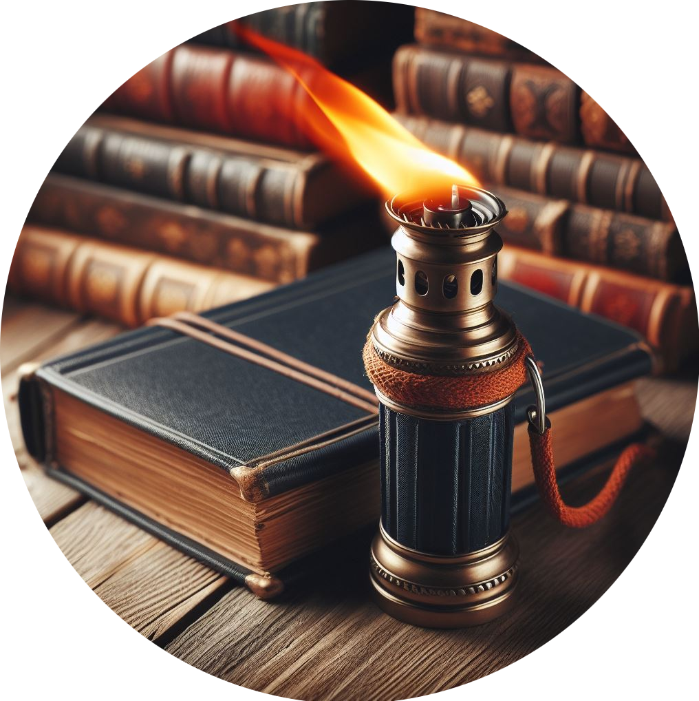

Lanterns: The Seven Spirits of God
Published on 2024-05-05

Abstract
The Seven Spirits of God spoken of by John in Revelation are enigmatic. They factor into so many of the chapters in my recent books that a full accounting of their meaning is impossible for a short article. Some of the ideas here were covered by the chapter "Swords, Seals & Surviving to Saturday" in Peace, like Solomon Never Knew. This piece will focus on the following ideas:
- Identifying the Seven Spirits of God by name
- Matching each Spirit to one of the Seven Pillars of Wisdom
- Correlating the Seven Spirits with phases of the Harvest Pattern of Jesus
- Recounting the four most prominent times in history when the Seven Spirits have been sent out into the earth
Lanterns: Naming the Spirits
In four verses, Revelation 1:4; 3:1; 4:5; 5:6, we are told of the Seven Spirits of God. An ancient Jewish tradition is that there are seven archangels, only two of whom (Gabriel and Michael) are named in the Bible. Thus some people believe that the Seven Spirits of God are those seven archangels. A second interpretation (to which I subscribe) is that this is a reference to the Holy Spirit which can communicate to people seven spiritual qualities, as defined by Isaiah:
There shall come forth a shoot from the stump of Jesse,
and a branch from his roots shall bear fruit.
And the Spirit of the Lord shall rest upon him,
the Spirit of wisdom and
understanding,
the Spirit of counsel and
might,
the Spirit of knowledge and
the fear of the Lord.
- Isaiah 11:1-2
This interpretation goes back at least as far as Saint Ambrose. He made the connection in chapter 16 of his treatise on the Holy Spirit, De Spiritu Sancto, ca 381 AD. (See On the Holy Spirit (Book I)) Many who make this connection extend the identity to include the seven pillars of wisdom. With this equivalence I disagree. The two are related, pillars and spirits. A pillar is solid, material, and strong. The Holy Spirit is not material but communicates strength to the beings that it inhabits. Pillars are used as an analogy for people of strong faith who hold the church together by their maturity and courage. To become a pillar in the temple of God (the promise of Revelation 3:12) requires two things. You need a person and you need to fill them with strength of character. The pillars of wisdom are the spiritual and conceptual thing that is added to a human to make them a pillar. Thus when we speak of the Seven Pillars of Wisdom we can either speak of people who have been made into such pillars or the teachings that accomplished that transformation. Since there are millions of potential pillar people but only seven categories of quality that each needs, the most sensible thing is to say that the pillars are those spiritual qualities that the Holy Spirit communicates. But what are those qualities? How are they defined and how do they relate to each other? By what authority and cohesive integrity do these pillars accomplish this feat? Only the Word of God has the clarity and force to accomplish this task. Thus the Seven Pillars of Wisdom must be some subset of the Bible that when applied by the Holy Spirit to the soul of the believer inculcates those qualities.
My research argues that those seven pillars of wisdom are the seven Bible books Psalms, Job, Proverbs, Song of Songs, Ecclesiastes, Matthew and Revelation. It also concludes that each pillar book must be illuminated so that the believer can understand it, act upon it and be transformed by it. That illumination is the work of the Seven Spirits of God. Each spirit (really just distinct activities of the one Holy Spirit) illuminates one pillar. It is like a lamp mounted on the pillar to light the path to understanding. This analogy is not of my own invention:
From the throne came flashes of lightning, and rumblings
and peals of thunder, and before the throne were burning
seven torches of fire, which are the seven spirits of God...
- Revelation 4:5
The beauty of these torches is that they concisely describe a goal that each of these Bible books was crafted to accomplish for us. The fact that they provide such clarity is evidence that the selection of books is correct and they are ordered in a meaningful way. I derived my ordered list of the seven pillar books before concluding that each matched a spirit of God. My principal reason for the order was different - it made the pillar books conform to the Harvest Pattern of Jesus. The fact that these two ways of looking at the books produced the same order cannot be a coincidence.
Matching Spirits to the Pillars in Lady Wisdom's House
The Bible's seven pillar books supply the clues that allow us to match each to a spirit. Let's walk through the books and see what they have to say.
Psalms. The first spirit - the spirit of the Lord - goes with the Psalms. The obvious clue is that the Hebrew word for Lord appears more often in Psalms than in any other book. In my NIV concordance, that is 717 times. The other clue is how the Psalms liken the Word of God to the light of a lamp:
For it is you who light my lamp;
the Lord my God lightens my darkness.
- Psalm 18:28
Your word is a lamp to my feet
and a light to my path.
- Psalm 119:105
Accepting Jesus as Lord is the basic, first step of the Christian life. The Psalms are a meditation on the Law, and receiving that Law, those Ten Commandments, is the first step toward holiness. Therefore the first spirit is the Spirit of Lordship.
Job. The second spirit - the spirit of Wisdom - goes with the Book of Job. The strongest basis for this association is found in Ecclesiastes, which tells us that the heart of the wise is in the house of mourning (Ecclesiastes 7:2,4). Job's declaration in Job 1:21 defines mourning as his baseline challenge: "The Lord gave, and the Lord has taken away..." Thus Job lived in the House of Mourning.
The second basis for this association is Job 28, his paean to wisdom. He laments how nobody knows the path to wisdom, the very thing he needs if his questions are to be answered and his life restored. God teaches us many things. Wisdom is what he teaches us through suffering. Knowledge, gift of the sixth spirit, is the detailed knowledge of all things. It builds upon wisdom but carries things much further.
Proverbs. The third spirit - the spirit of Understanding - goes with the Book of Proverbs. Our Bible concordance helps us here as well. The words understood, understand, understands and understanding appear forty-three times in Proverbs, leaving Job with its thirty-one instances in second place. Given that there are three similar words used to name the spirits, wisdom, understanding and knowledge, it is important to "understand" the distinction. It was not until I studied the life of Joshua that I understood understanding. We shall get to that story in a later section of this article, "Second Sending: With a Sword".
Understanding is all about heavenly treasure, spiritual values and worship. True worship is recognizing the true value of things, worshiping the greater and rejecting the lesser. God is greatest, and so we are to worship him and no other. The truth content of worship is how God communicates aspects of himself to us when we worship him. The insights we receive as a result of worshiping the Lord guide us around and through difficulties.
Like Job in Job 28, Proverbs uses the metaphor of treasure extensively. The book speaks a lot about the desire for a wife, for money, property, and a high position in society. All its words of caution are about recognizing the value of those things but pointing to the greater value of wisdom and of God. Proverbs warns about how the worship of wealth leads to theft, dishonesty and violence. The worship of women leads to sexual immorality and disgrace.
This focus of Proverbs on worship was not obvious to me at first. How did that begin to change? During 1988, I read from Proverbs every day for six months. I turned that book into my prayer journal. What I did not understand, I prayed to God to explain. When I failed in my attempts to apply many of the Proverbs to my conduct, I prayed to God for forgiveness and the ability to change. By the end of that time, I found myself worshiping God through the Proverbs. Those Proverbs are a father's attempts to raise a wise son. Jesus is the only truly wise Son. By studying Proverbs, I was learning about who Jesus is.
That kind of worship changes you. That year, I truly met the Spirit of Understanding.
Song of Songs. The fourth spirit - the spirit of Counsel - goes with the Song of Songs, but really with all the prophets. The prophets were advisors sent by God to correct error, warn of judgment, and get people back on the right path, "the Way of Holiness" as Isaiah called it. In the poem, the Bride counsels her friends not to arouse or awaken love until it is time. Romance is but one of the topics concerning which people need advice.
In my analysis of the Song of Songs in "Appendix G: A Prophetic Song of Songs" in Peace, like Solomon Never Knew, I related a surprising discovery. The twenty-eight speaking parts in the poem match the twenty-eight times from Ecclesiastes 3 - sort of. In fifteen of the speeches, the exact opposite of the matching time is on display. Thus the whole poem is advice about how young people tend to get the times of life out of sequence, always trying to do today something that they should hold off until they get older, like marrying too young.
The Bride also gets in trouble and is almost molested by bad characters when she wanders into the wrong place at the wrong time. The spirit of counsel is what we need to steer clear of unnecessary trouble.
Ecclesiastes. The fifth spirit - the spirit of Might - goes with Ecclesiastes. Given that this book speaks relentlessly about time, how is it different from the spirit of Counsel, which advised about making poor decisions because the timing was wrong? This book and this spirit are about what happens when you get the timing and focus of your life right. A dissolute, unfocused, disorganized person squanders their energy on every sort of activity. They lack a sense of priorities. They exhaust their energy and so become weak and ineffective in life. I know what that is like!
God plucks, prunes, and disciplines us until we have a productive focus for our life. Solomon, the author, was a king. He planted vineyards, built houses and a temple, ruled with justice, waged war, negotiated with foreign kings, and managed affairs of every sort. He is a good example of an effective, focused person, a person of might. In Ecclesiastes 9, we find one of the core statements of the book. The wise king gives a charge to live a life where you consistently spend your might towards worthy goals:
Go, eat your bread with joy, and drink your wine with a merry heart,
for God has already approved what you do.
Let your garments be always white.
Let not oil be lacking on your head.
Enjoy life with the wife whom you love, all the days
of your vain life that he has given you under the sun,
because that is your portion in life and in your toil
at which you toil under the sun.
Whatever your hand finds to do, do it with your might,
for there is no work or thought or knowledge or wisdom
in Sheol, to which you are going.
- Ecclesiastes 9:7-10
These words are so deep, I shall never reach the bottom. We do things that seem vain and meaningless, but they have been approved by God for us to do, which means that they are not. One of the greatest life-changing truths I ever got from the Bible was that we do not work hard to earn God's approval. We work hard because we already have God's approval (once we are saved). His favor produces good works, not the other way around. When I learned in the Fall of 1985 that I was accepted by the Lord despite having nothing to show for my efforts in this world, I found peace. Not having to earn God's love is a huge relief. The heart so unburdened finds the might to do great things.
Matthew. The sixth spirit - the spirit of Knowledge - goes with Matthew. The word knowledge does not even appear in Matthew, but that book is filled with the most important knowledge we have been given: knowledge about our savior's life and teachings. It remained to Paul to tell us what we need to know to make this assignment, that Christ possesses all knowledge:
For I want you to know how great a struggle I have for you
and for those at Laodicea and for all who have not seen
me face to face, that their hearts may be encouraged,
being knit together in love, to reach all the riches of
full assurance of understanding and the knowledge
of God's mystery, which is Christ, in whom are hidden
all the treasures of wisdom and knowledge.
- Colossians 2:1-3
Revelation. The seventh spirit - the spirit of the Fear of the Lord - goes with Revelation. This book reveals the trials of seals, trumpets, earthquakes and bowl judgments in which God pours out His full wrath upon the inhabitants of the earth. Those events will finally teach the whole world to fear the Lord.
By these arguments, it is sensible to associate each spirit with the books so named. There are other reasons for not associating other books with a spirit. The principle reason is that these seven books conform to the Growth and Harvest Patterns which mark them as pillar books, whereas other books do not.
NOTE: Paul's first seven letters come close. Each corresponds to one phase of the Growth Pattern; no single book matches them all. They form the roof of Lady Wisdom's house, not pillars. The presence of the Growth Pattern in the letters collectively shows that the roof fits on top of the pillars. See The Apostle Paul's Discipleship Program for the analysis of those letters in terms of the Growth Pattern.
The Seven Spirits and the Harvest Pattern
The Harvest Pattern of Jesus has seven phases and there are seven spirits of God. It was therefore natural to ask the question, "Does each spirit go with one phase of the harvest?" The short answer is that they fit. However, the nature of that fit raises another question as we shall see.
| Spirit | Phase | Connection |
|---|---|---|
| Lordship | Preparation | Acknowledging Christ as Lord and being trained in the Ten Commandments is the necessary preparation for any harvest. |
| Wisdom | Plowing | Plowing is suffering, and through patiently suffering in faith we receive wisdom from God, just like Job. |
| Understanding | Planting Seed | The seed of the gospel must be accepted, not lost to the birds. We accept it through worship, which is the foundation of understanding. |
| Counsel | Pouring Water | The Holy Spirit is the Counselor (John 14:26), and washing hearts with pure water to produce holiness is his forte. The sun-beaten, rocky soil of our hearts must be turned to flesh (Ezekiel 36:26) and watered. |
| Might | Plucking Weeds | Pruning branches and plucking weeds is hard work. For it, you need strength. The result is a focused, disciplined life. By not squandering your energies on fruitless diversions, you grow strong for the work God has set before you. |
| Knowledge | Producing a Harvest | The harvest requires knowledge to bring in and the result of the harvest is increased knowledge. Jesus is the Lord of the Harvest, so the connection between knowledge, harvesting and the Gospel of Matthew is strong. |
| The Fear of the Lord | Peace | This is the tricky connection, to be discussed below. |
The most perplexing thing about the ordering of the Spirits is the placement of the Spirit of the Fear of the Lord in last place. Remember, the Bible teaches that "the fear of the Lord is the beginning of wisdom" (Psalm 111:10; Proverbs 9:10) or of knowledge (Proverbs 1:7). Why does it not come first?
In Ecclesiastes, the fear of God shows up in the argument in chapters 3, 5, 7, 8, 12 and is part of the conclusion:
The end of the matter;
all has been heard.
Fear God and keep his commandments,
for this is the whole duty of man.".
- Ecclesiastes 12:13
It appears that the Fear of the Lord is integral to every phase of the Christian life. Is there something distinct that the Spirit of the Fear of the Lord does when we get to the end of a harvest? One wonderful Bible verse that ties together several of these ideas is in Acts:
So the church throughout all Judea and Galilee and Samaria
had peace and was being built up.
And walking in the fear of the Lord
and in the comfort of the Holy Spirit, it multiplied.
- Acts 9:31
You can sense the complex and powerful dynamic that was causing the church to grow at that time. The trick is to understand the causal connections and see the process. Not all verses show process; they list ideas in a different order to serve a different purpose. For example:
if you seek it like silver
and search for it as for hidden treasures,
then you will understand the fear of the Lord
and find the knowledge of God.
- Proverbs 2:4-5
If you take that verse to imply causation, then the fear of the Lord should come before knowledge. An alternate reading is that the earlier phrase is really about the spirit of understanding, for you are made to "understand the fear of the Lord". That would mean that the final appearance of the Fear of the Lord in sequence is to empower a people that has already been trained to love it, learn from it and walk in it. A people so discipled will produce so much fruit, experience so much miraculous provision from God, that the world will take notice and give way before them in fear, knowing that such a people has the protection of God and cannot be destroyed.
The Sending Out of the Seven Spirits
And between the throne and the four living creatures
and among the elders I saw a Lamb standing,
as though it had been slain,
with seven horns and with seven eyes,
which are the seven spirits of God
sent out into all the earth.
- Revelation 5:6
On reading the above verse, several questions come to mind.
- When were the Seven Spirits sent out?
- Were they sent out all at once or in a particular order?
- Were they sent out once or many times, for different missions?
- When sent out, what was the purpose of their sending?
All these questions have answers, and finding them was a pleasant surprise. The one question that is unanswered is how many times the spirits have been sent out. I suspect the number is huge. We don't need to know about all their missions, though. The Bible has given us evidence of at least four:
- To assist with the creation of the world
- To execute key judgments against humanity throughout history and so advance God's plan of salvation at the longest time scale
- To discipline and train believers during the church age
- To assist with the final judgment of mankind during the time of the Great Tribulation
The reason that we are able to make this determination is because each time the spirits were sent out in the order they are listed in Isaiah and they influence the character of the activities that occur in each phase. By studying the events and reflecting on the details of each step, we can detect which spirit was at work and so confirm the pattern.
Once you see these pattens in salvation history, you will have proof that this sequence is powerful and important. Then you will gain confidence that attuning yourself to the seven spirits will enable you to gain insight into what God is doing in your life right now, and how you can cooperate with the Holy Spirit's work.
First Sending: During the Days of Creation
Day 1: Let there be light... In Revelation 4:5, the spirits are called "seven torches of fire". In Genesis 1:2, "the Spirit of God was hovering over the face of the waters." Thus we know from the text that the Holy Spirit is present and participating in the creation of light. God is introduced as the creator. The most important point being made is that He is the Lord of creation, who initiated and governed every aspect of its manufacture. This is the spirit of the Lord, or Lordship.
Day 2: The heavens, sky and the separation of the waters. This is the only day of which it was not said that God saw that it was good. There is a correspondence between the days of creation and the millennia of history. The second millennia is when the great flood occurred, another event involving water. That millennia saw great wickedness, flood, the tower of Babel and the beginnings of slavery. That millennia was full of suffering, and it is suffering that produces wisdom. That is why we can see the presence of the spirit of Wisdom here. Wisdom is about making distinctions. The waters were separated. The water of the Heavens was separated from the waters of the earth. This expanse of separation signifies the great distance between us and God. It was that distance that tormented Job and forced him to come to grips with God's ways.
Day 3: Dry ground, seeds, plants and fruit trees. The planting phase of the harvest pattern is obvious. The spirit of understanding is tied up in worship. Though plants are not very smart, they are the first living things upon the face of the earth, the first things that can respond to the good world that God has given them.
Day 4: Sun, moon and stars. The spirit of counsel, as evidenced in Song of Songs, is about giving advice about what to do and when. The when requires us to plan our days, to measure them. That would not be possible without God's heavenly timepieces, which govern the days, seasons, and years.
Day 5: Fish and birds. The spirit of might is all about giving out a noble task, and fostering the focus and strength needed to complete that task without giving in to distraction or laziness. For the first time in creation, such a task is assigned by God to his creatures:
And God blessed them, saying,
“Be fruitful and multiply and fill the waters in the seas,
and let birds multiply on the earth.”
- Genesis 1:22
This is the day when the great sea serpent, Leviathan, was created, which would come to symbolize strong and terrible empires. God said of this creature:
In his neck abides strength,
and terror dances before him."
- Job 41:22
Though the sword reaches him, it does not avail,
nor the spear, the dart, or the javelin.
- Job 41:26
Yes, might dwells in the sea.
Day 6: The animals and mankind. The spirit of knowledge waited until day 6 to arrive, for none of God's material creations has the capacity to acquire knowledge to the extent that humans can. Furthermore, Jesus would one day become the only man filled with all the treasures of wisdom and knowledge. Also, this knowledge is about producing a harvest and having dominion over the earth, and Adam's task was to till the earth and do just that.
Day 7: God rested. The sequencing of events in Genesis 2 is tricky. It seems to back up and give additional details of the creation, before moving forward again. Thus it is difficult to determine whether the command to not eat from the tree of the knowledge of good and evil was given on day 6, day 7 or later. However, textually the command was given following the description of the seventh day when God rested, the first sabbath. The command and its associated punishment of death is the first place in the Bible where a note of fear is introduced. Thus this is when the spirit of the Fear of the Lord entered the scene.
One might counter that it is impossible for God to divide himself, to express wisdom only on day two, or might only on day five. That is not the point. Some people argue that God created the universe instantly, that it is an affront to His glory to say that it took Him a whole seven days to complete the job. God does what He does, emphasizing one thing here and another thing there, because He is a teacher to creatures that are not infinite. Thus the story of the creation shows traces of the work of each spirit spread out among the days so that we can see that there is an order to things in God's economy, and we should imitate Him if we want to be productive in our lives.
Second Sending: With a Sword
Ephesians 6:17 refers to the "the sword of the Spirit, which is the word of God". Hebrews 4:12 says that "the word of God is living and active, sharper than any two-edged sword". This powerful image tells us that the power of God's Word is wielded like a sword by the Holy Spirit. The Spirit wields that sword every day, but there are special occasions when the powerful effects of this swordplay overturn empires and change the course of history. The Bible takes note of these events and we can learn from them.
This section will reproduce part of the chapter "Swords, Seals & Surviving to Saturday" from Peace, like Solomon Never Knew. The basic idea is that while the Bible often refers to swords, only a few of them are in a miraculous context. Those mentions of swords are spaced out in history, one per millennium. In each case, the events surrounding that sword are indicative of one of the seven spirits of God.
Please pardon the repetition of some ideas and Bible passages already covered in this article.
Swords, Seals & Surviving to Saturday (Part A)
Everybody's working for the weekend, at least that is what the band Loverboy told us in their 1981 hit song. If all of history is likened to a week and we call the creation “Sunday”, then the day of rest, the day Christ returns, is “Saturday”. The question for us all is: will we survive until Saturday? Will we make it to the weekend?
Seven Swords (sans Samurai)
The church of Pergamum faced God’s double-edged sword in its day, as we learned in the chapter “Seven Churches for Seven Eras” of Peace, like Solomon Never Knew. That was no aberration. God drew His sword in Eden and will not sheath it until the final victory is won on the Saturday of world history, when weekend will become world’s end. He wields that sword against the world’s unrighteousness every day, and we should fear it.
To reach peace we must pass through war. As I write, it is Veteran’s Day, 2020. What got me fixated on swords today? I was reading about the cherubim in the Garden of Eden. After that, I just had to see if there was a pattern to discover. Men in the Bible are forever drawing swords, but God is sparing with significant references to this weapon. There are seven.
Sunday. Today, the cherubim guarding the Tree of Life in Eden wield a flaming sword, to keep Adam and Eve out after they fell from grace. That sword means exile. (Genesis 3:24)
Monday. Methuselah’s name may mean “man of the sword” or “sting of death”. (Genesis 5) Commencing with his death on this day, God wields a sword in the form of the flood, sparing only Noah’s family. After the flood, God delegates to humans the power of the sword: authority to execute murderers and establish human government. (Genesis 9)
Tuesday. On the way to Jericho today, Joshua sees a man with a drawn sword in his hand. It is the commander of the army of the Lord, believed to be the preincarnate Christ. God commands Joshua to wage war against evil peoples and grants Israel victory. ( Joshua 5:13-15)
Wednesday. Today Israel turns away from God, so it is time for her to face God’s sword: the words of the prophets. Swords of judgment are spoken of in Isaiah (18 times), Jeremiah and Lamentations (68 times), and Ezekiel (82 times). Their 148 warnings are ignored and Judah goes into exile.
Thursday. Today Emperor Constantine sees the sign of the cross and makes it into a sword hilt. Under that sign he conquers. Church and empire become entangled, earning a rebuke from Jesus in his letter to the church of Pergamum. He threatens them with his double-edged sword. (Revelation 2:12,16) This sword of might was prophesied at the beginning of this prophetic day by Jesus, when he said:
Do not think that I have come to bring peace to the earth.
I have not come to bring peace, but a sword.
- Matthew 10:34
Friday. Today the wars of religion rage throughout 16th and 17th century Europe, and by the 18th century, the whole world. “Then another horse came out, a fiery red one. Its rider was given power to take peace from the earth and to make people kill each other. To him was given a large sword.” (Revelation 6:4, NIV)
Saturday. Victory!
I saw heaven standing open and there before me was a white horse,
whose rider is called Faithful and True.
With justice he judges and wages war. His eyes are like blazing fire,
and on his head are many crowns. He has a name written on him that
no one knows but he himself. He is dressed in a robe dipped in blood,
and his name is the Word of God. The armies of heaven were
following him, riding on white horses and dressed in fine linen,
white and clean. Coming out of his mouth is a sharp sword with which
to strike down the nations. “He will rule them with an iron scepter.”
He treads the winepress of the fury of the wrath of God Almighty.
On his robe and on his thigh he has this name written:
king of kings and lord of lords.
- Revelation 19:11-16, NIV
Employing the days of the week was no gimmick. If you divide history into seven prophetic “days”, each a thousand years long (as in prior chapters), the divine sword makes one appearance each day. One. What does this mean? It means that the judicial sevens of Revelation spill over into the whole Bible. Will we survive until Saturday? Can the church hold out until the day of victory?
Joshua solves a riddle. Not convinced? When I share with others some of the ideas in this book, a common response is, “Why would God hide important messages behind such complex riddles? How does He expect us to act on things we cannot understand?” By assuming it is not in God’s character to do such a thing, they are able to reject any and all interpretations of such riddles. To this argument they add, “And if such riddles are there, how come no great theologians or holy people of the past have found and solved them before?” Since I am neither a great theologian nor a particularly holy person, that means that I ought not be able to unravel such mysteries, therefore have not.
Those criticisms got me thinking – but not to defend my great wisdom or worthiness. Maybe there were holy people who did discover parts of this riddle and acted on it. They got it. They believed. They benefited. Then it only falls to us to recognize their insight and follow their example. For such an example we need look no farther than Joshua. Something about Joshua puzzled me for years. When Joshua saw the man with the drawn sword approaching (in Joshua 5:13-15), after challenging him, why did he submit without question? Why did a mighty general kneel before a stranger and trust him to be an angel? There is no indication of any miracle being performed. No flashing white robes. No thundering voice.
Why? Because Joshua knew the Word of God:
“See now that I myself am he!
There is no god besides me.
I put to death and I bring to life,
I have wounded and I will heal,
and no one can deliver out of my hand.
I lift my hand to heaven and solemnly swear:
As surely as I live forever,
when I sharpen my flashing sword
and my hand grasps it in judgment,
I will take vengeance on my adversaries
and repay those who hate me.
- Deuteronomy 32:39-41, NIV
The pairs of death and life, wound and heal remind me of Ecclesiastes. That passage is about knowing the times God has set. The above is from a song that Moses taught the people to sing – and Joshua stood right next to him when they were first spoken. Moses gave these instructions to all Israel after he finished reciting it:
Moses came with Joshua son of Nun and spoke all the words of this
song in the hearing of the people. When Moses finished reciting all
these words to all Israel, he said to them,
"Take to heart all the words
I have solemnly declared to you this day, so that you may command
your children to obey carefully all the words of this law. They are
not just idle words for you—they are your life. By them you will
live long in the land you are crossing the Jordan to possess.”
- Deuteronomy 32:44-47, NIV
It was right after Joshua crossed the Jordan and entered the Promised Land but before the crucial conquest of Jericho that the man with the sword appeared. By faith Joshua knew that the man with the sword was fulfilling the words from Moses’ song. He knew that believing, understanding and acting on Moses’ words meant submitting to that man’s authority, because the sword was God’s flashing sword and the time was now. Those words were his life and ensured the victory of Israel.
Back to Revelation. A complete analysis of Revelation is worth another book, but there is value in tackling the seven seals. The Apostle John is shown (in Revelation 5) a scroll with seven seals. No one can read the scroll until it is unsealed. After a search is made for one worthy to open the seals binding the heavenly scroll, only Jesus qualifies. In chapter six, Jesus begins to open the seals. The first four seals opened release the four horsemen of the apocalypse.
When? When will the dread horsemen ride? Some believers schedule them in the distant future. Some relegate them to the distant past. The rest do not expect one single fulfillment of these words: war, famine, pestilence and death will strike our world repeatedly.
God’s revelations are like fractals. The same pattern can repeat at a larger scale and a smaller one. There may be an intense seven-year tribulation in our future. There certainly is a tribulation today.
While formulating my eschatological (i.e. end times) framework, I gave no thought to the seven seals, trumpets and bowls of Revelation. There was already too much material to wrestle with in Ecclesiastes and Job. However, when I noticed the pattern of seven swords, it connected three times to Revelation: to the seven churches, the seven seals and the final battle. There is no escaping the seals. Serendipitously, they confirm the work leading up to it. The seven seals (a spiritual clock) do not contradict the other clocks.
Seven Swords for Seven Spirits
Why make a big deal about the seven swords if they are not explicitly addressed in Scripture? Look closer and you will see that they are, if interpreted carefully:
Then I saw a Lamb, looking as if it had been slain, standing at the
center of the throne, encircled by the four living creatures
and the elders. The Lamb had seven horns and seven eyes,
which are the seven spirits of God sent out into all the earth.
- Revelation 5:6
The sending of the seven spirits out into the earth preceded the opening of the seven seals. Could the seven swords and the seven spirits be related? Recall the characteristics of those seven spirits:
The Spirit of the LORD will rest on him—
the Spirit of wisdom and of understanding,
the Spirit of counsel and of might,
the Spirit of the knowledge and fear of the LORD—
- Isaiah 11:2
Lord. By disobeying a command, Adam and Eve rejected God as Lord. Lordship is the first quality of the seven spirits. Did this first sword accomplish God’s purpose? This verse, from a later time during the first millennium, tells us that it did:
Seth also had a son, and he named him Enosh.
At that time people began to call on
the name of the LORD.
- Genesis 4:26, NIV
The full flowering of this movement to follow God as Lord occurred during this millennium, with the birth of Enoch who began to “walk faithfully with God” (Genesis 5:22,24) and was taken up to heaven without dying at the millennium’s close.
Wisdom. The judgment by flood exhibited God’s unfathomable wisdom, the second quality. He saved the earth by destroying it, drew mankind closer to eternal life by shortening our maximum lifespan, and protected life by establishing capital punishment.
This was when God decreed the length of a generation to be one hundred twenty years, defining the timescale for all remaining history to follow. Wisdom is all about time, and it is communicated through suffering. With the flood, Tower of Babel and the advent of slavery, what millennia ever saw so much suffering as this one?
Understanding. The key to Joshua’s victory over Jericho was not strength of arms, it was worship.
Now when Joshua was near Jericho, he looked up and saw a man
standing in front of him with a drawn sword in his hand. Joshua
went up to him and asked,
“Are you for us or for our enemies?”
“Neither,” he replied, “but as commander of the army of the LORD I
have now come.”
Then Joshua fell facedown to the ground in reverence, and asked him,
“What message does my Lord have for his servant?”
The commander of the LORD’s army replied,
“Take off your sandals, for the place where you are standing is holy.”
And Joshua did so.
- Joshua 5:13-15, NIV
After that, the people obediently marched seven times around the city, blew their trumpets, and the walls of Jericho fell.
To understand the value and power of worship requires the Spirit. The connection to worship was not at all obvious to me until I found it in the song Moses taught the people in Deuteronomy 32. As related a few pages ago, it was in the words of a worship song that God delivered the prophesy of the coming of the man with the sword. It was by being a true worshiper of God that Joshua recognized the signs and made the correct decision to submit to the strange man with the sword. True worship gave him understanding.
Six times the Bible mentions a double-edged sword: Judges 3:16, Psalm 149:6, Proverbs 5:4, Hebrews 4:12, and Revelation 1:16 and 2:12 . All are relevant to this discussion. Later in this third millennium, we find the first mention of a double-edged sword, in Judges 3:16. Ehud the Judge deceived their enemy, Eglon, King of Moab, and killed him with that sword. While not so flashy as a sword-wielding angel, it allows us to make important connections to the Psalms and Revelation. Psalm 149 reinforces the connection between the sword and worship:
May the praise of God be in their mouths
and a double-edged sword in their hands…
- Psalm 149:6, NIV
Hebrews contains the answer key that defines the meaning of the prophetic sword for us:
For the word of God is alive and active.
Sharper than any double-edged sword,
it penetrates even to dividing soul and spirit,
joints and marrow; it judges the thoughts
and attitudes of the heart.
- Hebrews 4:12
Then in Revelation, we find a connection between this time and the letters to the churches. Remember, we have been discussing the third millennium. There is some sense in which the seven letters also correspond to the seven millennia of history through the mediating pattern of the harvest. At the end of the letter to the third church, the Church of Pergamum, Jesus says, “Whoever has ears, let them hear what the Spirit says to the churches...” (Revelation 2:17) Thus if there are seven spirits of wisdom sent into the world and the Spirit addresses seven churches, we should expect aspects of each spirit to be distributed, one to each church. In the case of Pergamum, the connection is clear:
“To the angel of the church in Pergamum write:
These are the words of him who has the sharp,
double-edged sword… Repent therefore!
Otherwise, I will soon come to you and will
fight against them with the sword of my mouth.
- Revelation 2:12,16
The connection to the wisdom of true worship is made clear only by reflection on history. Pergamum the city was home to a pagan temple to Athena, a false goddess of wisdom. Pergamum the church era was dominated by crises over true worship but concluded with the construction of the Hagia Sophia, for over 900 years the grandest place of worship in Christendom. Its name meant “Holy Wisdom” and it was commissioned by Justinian, an emperor who tirelessly wielded the sword against the enemies of Christ.
As a cautionary tale, returning to Joshua’s day we have the story of Balaam and his donkey, in Numbers 22. The Angel of the Lord also appeared with a drawn sword before Balaam. This practicer of divination was intent on offering immoral sacrifices – false worship – to curse Israel in order to get money from Balak. The man’s donkey was a wise servant who saw the armed angel and refused to advance lest his master be killed. Balaam was a fool, who did not see the angel at first and beat his donkey for not moving, and so was rushing headlong toward death. False worship produces blindness. It prevents understanding.
Sadly, those without understanding are still capable of spreading disaster:
For the lips of the adulterous woman drip honey,
and her speech is smoother than oil;
but in the end she is bitter as gall,
sharp as a double-edged sword.
- Proverbs 5:3-4, NIV
Adultery is used as a metaphor for idolatry, for false worship. When the Moabites and Midianites could not defeat Israel by force of arms or by pronouncing supernatural curses, Balaam in Numbers counseled them to entice Israel by sending women to seduce them, knowing that this would compel a righteous God to turn against Israel. It worked. Many in Israel died because of the incident involving the Baal of Peor.
Thus the third quality of understanding was dispatched, one not everyone can see. These two tales finally converge in Joshua 13:22, when Balaam the diviner fell before Israel’s sword.
Counsel. Isaiah, Jeremiah and Ezekiel as well as the minor prophets counseled the people to repent before it was too late, but they mostly refused. One who did heed the message was Jehoshaphat, in 2 Chronicles 20, who humbled himself by praying, fasting and prostrating himself before the Lord. The king trusted the counsel of God’s prophet, Jahaziel, son of Benaiah, and marched out against a superior force, yet was victorious. At the head of his army marched worshipers, not soldiers, and they carried the day.
Isaiah told his people what the seven spirits were, but to to what avail? In the end, the consequences forecast for refusing God’s counsel came to pass. Judah was conquered and sent into exile. The counsel of the prophets was the fourth spirit sent into the world.
Might. The spirit was sent to Constantine, and in response, the might of the longest surviving empire in world history was placed at the disposal of Christ’s church. The fifth spirit was sent to Rome. However, the drawing of this sword did not start with Constantine, but at Pentecost. On that day the baptism of the Holy Spirit was poured out upon the church, imbuing it with power.
This is the sword prophesied by Jesus:
“Do not suppose that I have come to bring peace to the earth.
I did not come to bring peace, but a sword.
- Matthew 10:34, NIV
Knowledge. The Protestant Reformation unlocked the truth that we are saved by grace alone through faith alone. This knowledge and the freedom and courage it inspired led to an explosion in education and scientific knowledge of every kind. The sixth spirit sparked the scientific revolution. This sword was drawn in Revelation 6:4. The explosion in knowledge also made war deadlier.
The Fear of the Lord. The seventh and last spirit is yet to come. When the last plagues are unleashed, the seven bowls and three woes of Revelation, then mankind will finally fear the Lord.
The Sharpest Sword. The qualitative analysis of the seven swords leaves an important thing unsaid. Where and when were the greatest number of references to swords found? The place was in Isaiah, Jeremiah, and Ezekiel; the time was during the day of the Spirit of Counsel. That is the era of the heart. Humanity is weak in mind and strength, but our greatest deficiency is in our heart. Jeremiah said we need new hearts to please God.
Who can comprehend all that these many swords have to say to us? The Bible has a habit of directing our attention to the first, middle or last in a series. The first use of a double- edged sword by Ehud is significant, as is the last in Revelation. The first mention of any sword in Genesis was significant. What is the last sword spoken of by an Old Testament prophet? That depends on how you define “Old Testament Prophet”. Jesus considered John the Baptist the last and greatest of the Old Testament prophets. Thus any prophet that arose before Jesus was baptized was an Old Testament prophet. By this definition, the last prophet to speak of a sword was Simeon.
Then Simeon blessed them and said to Mary, his mother:
“This child is destined to cause the falling and rising
of many in Israel, and to be a sign that will be spoken against,
so that the thoughts of many hearts will be revealed.
And a sword will pierce your own soul too.”
- Luke 2:34-35, NIV
The piercing of Mary’s soul was to see her son and savior die on the cross. If this is the apotheosis of all the sword references in the Bible, then we must ponder what it means. If the sword of the Spirit is the Word of God, and it is a double-edged sword that can separate soul and spirit, then it is a powerful agent that reveals our hearts. We do not want our dark thoughts and passions and plans laid bare, but we must submit to this surgery. I well remember the soul-pain of seeing my folly exposed as a young man, and the sword has not completed its final incision.
Yes, we must ponder this – and receive it in the spirit that Simeon gave it, as a blessing. Only by faith can we regard such a prick as the event that will make us rise.
Third Sending: To Teach the Seven Churches
In Revelation, Jesus dictates to John messages for seven different churches in Asia. One common understanding of the letters is that they apply both to seven literal churches that then existed, but also apply to seven eras of church history. In the following, consider that each letter is written in a different spirit and has been applied at least twice in history.
Ephesus (Revelation 2:1-7). The association between church and the spirit of the Lord here is fuzzy. The Ephesus church represents the Apostolic Church, the first church age, the age that knew the Lord personally. "But I have this against you, that you have abandoned the love you had at first." (Revelation 2:4) The main charge is that their love is weak. This is a weakening in their loyalty to the Lord. There is a connection to the time of the first sword, in Eden. "To the one who conquers I will grant to eat of the tree of life, which is in the paradise of God." (Revelation 2:7b) This inverts the punishment given to Adam and Eve. Two angels bearing swords barred them from reentering Eden, but the church of Ephesus is offered a reversal of the ban and admittance into a new Eden.
Smyrna. (Revelation 2:8-11). The spirit of Wisdom is associated with the learning that comes through suffering, just as Job learned about God through his. The church of Smyrna represents the era that endured the Roman persecutions. The city's name comes from myrrh, a spice used in preparing bodies for burial.
"Do not fear what you are about to suffer.
Behold, the devil is about to throw some of you into prison,
that you may be tested, and for ten days you will have tribulation.
Be faithful unto death, and I will give you the crown of life.
- Revelation 2:10
The ten days of tribulation were the ten Roman emperors who called for the persecution of Christians. Not only did the church survive to get that crown of life, but that crown was the conquest of the Roman empire without fighting a single battle, beginning with Constantine's Edict of Milan in 313 AD, to be followed by the Edict of Thessalonica in 380 AD.
Pergamum. (Revelation 2:12-17) This city's name means "united in marriage". This is the era when Christianity became the state religion of the Roman Empire. It was like church marrying empire, with mixed results. By gaining authority over Rome, the church obtained a great sword, but it was a double-edged sword, which can harm the one that wields it.
The spirit of Understanding has to do with worship, and this church tolerated idolatrous worship practices.
But I have a few things against you:
you have some there who hold the teaching of Balaam,
who taught Balak to put a stumbling block
before the sons of Israel, so that they might
eat food sacrificed to idols
and practice sexual immorality.
- Revelation 2:14
This letter opens up with the aggressive statement, "The words of him who has the sharp two-edged sword." (Revelation 2:12b) The first mention of a two-edged sword is in Judges, in the third millennium. The references to Balak and Balaam are from another story from that millennium, during the time of Joshua. For his deviousness in finding a way to curse Israel, Balaam died by the sword (Joshua 13:22).
The blessing for this church (if it repents), also recalls the time of Joshua:
To the one who conquers I will give some of the hidden manna,
and I will give him a white stone, with a new name written
on the stone that no one knows except the one who receives it.
- Revelation 2:17b
Joshua grew up during the wandering in the desert, when the people ate the miraculous manna from heaven. This is like communion bread only miraculous. It represents a swing in the other direction, to a purer understanding of worship than has ever been experienced in this world.
Thyatira. (Revelation 2:18-29) The matching spirit is the spirit of Counsel. The curse and blessing in this letter are opposite sides of the same coin.
But I have this against you, that you tolerate that woman Jezebel,
who calls herself a prophetess and is teaching and seducing
my servants to practice sexual immorality
and to eat food sacrificed to idols.
- Revelation 2:20
The curse is for listening to a false prophetess, which means the church is listening to a spirit of false counsel. The offered blessing is more wonderful than merely switching from listening from false to true counsel:
The one who conquers and who keeps my works until the end,
to him I will give authority over the nations.
- Revelation 2:26
What is better than receiving wise, godly counsel? Being wise and empowered to rule and counsel others in what is right and wrong!
Sardis. (Revelation 3:1-6) To this church was sent the spirit of might.
“‘I know your works. You have the reputation of being alive,
but you are dead. Wake up, and strengthen what remains
and is about to die, for I have not found your works
complete in the sight of my God.
- Revelation 3:1b-2
A church about to die is is exactly the kind of church that needs a visit from the spirit of might! In my prophetic analysis elsewhere, this era of church history ran from roughly 964-1453 AD. (Upon further reflection, I might extend the era to about 1500 AD, to include the good news of God's sending of relief. It is difficult to know if the blessings should be included in the era that was offered them, or the following era, as a sign of God's grace, whereby the gift causes the new era to begin.) The death was the destruction of the Byzantine Empire with the fall of Constantinople in 1453 AD. This capped off the loss of a third of Christendom to Muslim invaders. The strengthening by God was the discovery of the New World a few decades later. The conquest of the New World revived the fortunes Europe and the church.
The blessing was certainly prophetic:
The one who conquers will be clothed thus in white garments,
and I will never blot his name out of the book of life.
I will confess his name before my Father and before his angels.
- Revelation 3:5
What is this Book of Life? Is it the list of the elect, foreknown by God since the beginning of time? Is it a book of special rewards for the faithful? There is one Book of Life that we can find in the library today, and that is the Bible. The close of this era of church history occurred at about the time when Gutenberg printed the Bible using his new printing press. That event transformed the world.
Philadelphia. (Revelation 3:7-13) If one church age showed the greatest evidence that its spirit made an appearance, it is this one. The spirit of knowledge upended civilization and revolutionized everything. This church era ran from roughly 1453 to 1990 AD. The Age of Discovery, Reformation, Scientific Revolution, Industrial Revolution, Missionary Age, Space Age and Information Age all fall within this era. God poured out knowledge of all kinds upon the world.
The one who conquers, I will make him a pillar
in the temple of my God. Never shall he go out of it,
and I will write on him the name of my God, and the
name of the city of my God, the new Jerusalem,
which comes down from my God out of heaven,
and my own new name.
- Revelation 3:12
As the seven pillars of Wisdom represent all wisdom and all knowledge, the promise to be made into such a pillar indicates the acquisition of great learning.
Laodicea. (Revelation 3:14-22) This church will receive a visit from the spirit of the Fear of the Lord. It represents the final church age. I believe we are at its beginning, though parts of the world are still living in the age of Philadelphia. This is the church that will be around when the Great Tribulation reaches its greatest intensity and the church endures the greatest hardship.
So, because you are lukewarm,
and neither hot nor cold,
I will spit you out of my mouth...
Those whom I love, I reprove and discipline,
so be zealous and repent.
- Revelation 3:16,19
The above words cause me to fear, and they should make you feel the same.
Behold, I stand at the door and knock.
If anyone hears my voice and opens the door,
I will come in to him and eat with him, and he with me.
The one who conquers, I will grant him to sit
with me on my throne, as I also conquered and
sat down with my Father on his throne.
- Revelation 3:20-21
The final offer made to that church is the true goal of the spirit of the Fear of the Lord and all the seven spirits. In the middle of the tribulation, with the power of Satan at its height, with evil informants spying out our freedom and every human organization but one held captive by Leviathan, the fear of the Lord will not destroy the church. That fear will give the church the courage to stand firm and resist all evil, to conquer and reign with Christ. That final spirit will be the church's greatest ally in the final war against the enemies of God.
Fourth Sending: To Open the Seven Seals
Revelation speaks of a mysterious scroll that is encrypted or secured by seven seals. After a search for someone who is worthy to open that scroll so that its contents may be read, only one is found: the lamb who was slain, Jesus. Whenever people speculate about the opening of those seven seals, talk inevitably turns to these questions:
- When will each seal be opened?
- What dire events will transpire, which are meant by the mysterious symbols and parables in Revelation?
Those questions are unanswerable because the people who propose answers for the above have nothing to say about these questions:
- What forces, natural and supernatural, accomplish the unsealing?
- What is being unsealed?
"Appendix H: Clues to the Seven Pillars" in Peace, like Solomon Never Knew answers the third and fourth questions. With those answers, you can make progress towards solving the first two. What is being unsealed in Revelation 6 and 8 are pillars of wisdom. As each seal is cut, the next pillar book is unsealed, made more intelligible to the church by the relevant Spirit of God. Thus the unsealing has two consequences:
- The church is further enlightened, strengthening it
- The unbelieving world is plagued by a resurgent church
So much attention is focused at the plagues upon the unbelievers that the blessings of the new wisdom are dismissed. It is those blessings of new wisdom and capabilities that will enable the church to survive and thrive. We must devote quality time to listening to the good news!
Earlier in this article, the seven spirits of God were matched to the pillar books. A direct match of spirits to seals on the lamb's scroll is not possible in most cases. The matching must be through the pillar books and the historical events that were prophesied in Revelation 6.
The System. The End Times section of this website provides in depth analysis of a theory of eschatology called Fractal Historicism. Without proof, here are key dates from that system which are needed to justify the timing of the opening of the first five seals. That timing is necessary if we are to match historical events to the opening of the seals. Those events, in turn, support the association of spirits to pillars to seals.
In the historical accounts below, Thessalonica is given prominence. Because Paul was prevented by the Holy Spirit from traveling farther into Asia Minor where he wanted to go, he went to Macedonia instead:
During the night Paul had a vision of
a man of Macedonia standing and begging him,
‘Come over to Macedonia and help us’
- Acts 16:9
Among the churches that Paul planted on this second missionary journey was Thessalonica, capital of Macedonia. It signifies the expansion of the Gospel into Europe. Also, Macedonia was the home of Alexander the Great and symbolizes the Greek dimension of the Roman Empire. When the Roman Empire split into western and eastern empires, the Eastern Roman Empire, Byzantium, retained its Greek flavor, while the Western Roman Empire preserved the Latin flavor of the civilization.
Paul's letters to the Thessalonians emphasize the last days and the return of Christ. It is therefore fitting that the act that made Christianity the state religion of Rome was the Edict of Thessalonica. There are many theories about what the millennial kingdom of Christ will be like and when it will begin. I believe that it has already come and gone. The Millennial Kingdom was Christian rule over the Roman Empire. The evidence is here (as well as Revelation 12:5, 19:15):
The one who conquers and who keeps my works until the end,
to him I will give authority over the nations, and
he will rule them with a rod of iron, as when earthen pots
are broken in pieces, even as I myself have received
authority from my Father.
- Revelation 2:26-27
The "rod of iron" is Rome. This is based on the common interpretation of Nebuchadnezzar's dream of a statue in Daniel:
The head of this image was of fine gold,
its chest and arms of silver,
its middle and thighs of bronze,
its legs of iron, its feet partly of iron and partly of clay.
As you looked, a stone was cut out by no human hand,
and it struck the image on its feet of iron and clay,
and broke them in pieces.
- Daniel 2: 32-34
Here is a quote from the chapter "Fame is Purposely Futile" in Peace, like Solomon Never Knew:
Most scholars agree that the empire with legs of iron but
feet mixed with clay was Rome. Just as that statue had two legs,
Rome would come to stand in two parts, east and west.
It was a mixture of peoples constantly in conflict.
In one peculiarly precise prophetic detail, the Roman Empire
split into smaller and smaller pieces over the centuries.
Like wiggling toes, precisely ten of those pieces carved out
shorter-lived colonial empires of their own:
Portugal, Spain, France,
the Netherlands, Denmark, Germany,
Belgium, Italy, England, and lastly,
England’s problem child, America.
(We exclude Russia. It has a distinct name and
role in prophecy and was never under the sway of Rome or
its offspring.) Then, with a swift one-two punch,
the world wars devastated all those empires (but America).
Within decades most of their territories were stripped away.
Thessalonica shows up next in the Massacre of Thessalonica in 390 AD. A conflict related to the imprisonment of a popular chariot racer led to riots that were suppressed by a Roman massacre of civilians. Emperor Theodosius was compelled by Saint Ambrose under threat of excommunication to repent for the massacre of civilians. This was the first time in history that a civil monarch bent his knee to Christ and his church in submission.
Finally, Thessalonica is among the cities captured by the Ottomans during their final campaigns against Byzantium. So that city represents one of the church's first footholds in Europe, the turning point in its conquest of Rome, and a harbinger of the final collapse of Christian Rome.
In the timeline below, the dating of the opening of the seals is uncertain. That is because flashy, political developments like major wars are the obvious consequence of a seal being opened, but the more subtle scientific, theological or philosophical cause can precede it by many decades.
- 49 AD. Paul visits Thessalonica, capital of Macedonia.
- 380 AD. The Millennial Reign of Christ begins with the Edict of Thessalonica. Satan is bound.
- 390 AD. Massacre of Thessalonica.
- 1346-1353 AD. Black Death ravages Europe.
- Late 1370's. Andronikos IV by treachery and by allying with the Ottoman Sultan's son gained control of Constantinople at the cost of Gallipoli, providing the Ottomans an important beachhead for attacking Europe. During this successful siege of Constantinople, the supporting Ottoman troops entered Constantinople, symbolically ending the Millennial Kingdom of Christ.
- 1380 AD. Satan is unbound. First Ottoman attacks against Serbia begin with the Battle of Dubravnica in 1380.
- 1390-1453 AD. The Ottoman Empire lays siege to Constantinople in 1391, 1394-1402, 1411, 1422, 1453.
- 1422-1430 AD. Ottoman siege of Thessalonica.
- 1453 AD. Fall of Constantinople.
- 1455 AD. First Seal opened when Gutenberg printed the Bible using moveable type.
- 1517 AD. Martin Luther posts his Ninety-five Theses, launching the Reformation.
- 1554-5 AD. John Calvin preaches 159 sermons on Job.
- 1517 or 1618 AD. Second Seal opened either with Luther's publication of the Ninety-Five Theses, which started the Protestant Reformation, or the later start of the Thirty Years War.
- 1759 AD. Adam Smith, The Theory of Moral Sentiments.
- 1765 AD. James Watt invents expansion steam engine, official start of the Industrial Revolution.
- 1776 AD. Adam Smith, The Wealth of Nations.
- 1765 AD. Third seal opened with Watt's invention of an improved steam engine.
- 1776 AD. The American Revolution.
- 1807 AD. Britain's passage of the Slave Trade Act of 1807.
- 1917 AD. Fourth seal opened during World War I, with the October Revolution in Russia.
- 2040 AD? Fifth seal will be the next to open.
Each seal conceals the meaning of one of the Pillars of Wisdom, so removing that seal enables that book to be understood by the church. The understanding of that book then triggers massive changes in the world, some a form of judgment against the world and others gracious improvements to society. However, significant force must be exerted by God just to open the seal. That unsealing requires a combination of spiritual, philosophical, political, social and technological forces.
My early attempts to establish dates for the opening of each seal predate the identification of the Seven Pillars of Wisdom. Consequently, they were imprecise. Identifying the pillars and recognizing that they are the things being unsealed then enabled a refinement of those dates. A development related to that Pillar book must follow, not precede the opening of the seal.
First Seal. The Spirit of the Lord unseals the Book of Psalms.
Now I watched when the Lamb opened one of the seven seals,
and I heard one of the four living creatures say with
a voice like thunder,
“Come!”
And I looked, and behold, a white horse!
And its rider had a bow, and a crown was given to him,
and he came out conquering, and to conquer.
- Revelation 6:1-2
The forces that propelled this change and opened the seal were:
- biological: the Black Death, which weakened the Eastern Roman Empire and Europe
- political: the Ottoman conquest of Byzantium
- intellectual: learned refugees from Constantinople who brought expertise in Greek and Hebrew to the Latin West
- technological: the invention of the printing press by Gutenberg (which required multiple innovations: the press, the inks, the paper, the metal used for the type, and the letter punch matrix used to rapidly create new dies)
- spiritual: Over a millennium of prayer focusing on the Psalms
The textual connection is to Ishmael, father of the Arabs, ancestor of Mohammed and noted archer (Genesis 21:20). According to Muslim legends, Mohammed rode a magical white horse (called a buraq) to Jerusalem and then up to heaven. Another tradition has it that when Mohammed captured Mecca, he destroyed all the idols there, but kept seven sacred arrows used for divination. Certainly his followers came conquering. In a negative sense, the armies of Islam serve a different Lord, one opposed to the spirit of the Lord.
Not being a medievalist, the connection to the Psalms took me by surprise. During the Middle Ages, the Bible book that was most studied, memorized, sung, and prayed over was the Psalms. Illiterate people can memorize and sing poems. Artists can illustrate them. The church had a prohibition against people besides clergy and nobility owning the Bible, but they were permitted to own a Book of Hours, a prayer book based on the Psalms. So for over a thousand years, for your average Christian, the Psalms were the most important influence.
Notes:
From The Continuing Story of the Banning and Censoring of the Bible, David V. Urban:
The Roman Catholic church’s repression of the Bible
in vernacular languages has been documented since
the Middle Ages, with a few highlights being
Pope John X in 920 banning the use of
the Old Church Slavonic translation,
the Second Council of Tarragona in 1234 banning
ownership of a Bible in any Romance language,
and Archbishop Richard Arundel’s 1409 prohibition
of translating the Bible into English.
From Why Christians Were Denied Access to Their Bible for 1,000 Years
"We prohibit also that the laity should be permitted
to have the books of the Old or New Testament;
but we most strictly forbid their having
any translation of these books."
- Decree of the Council of Toulouse (1229 C.E.)
What is the longest psalm? Psalm 119. What does that psalm urge all people to do?
How can a young man keep his way pure?
By guarding it according to your word.
With my whole heart I seek you;
let me not wander from your commandments!
I have stored up your word in my heart,
that I might not sin against you.
Blessed are you, O Lord;
teach me your statutes!
With my lips I declare
all the rules of your mouth.
- Psalm 119:9-13
Oh how I love your law!
It is my meditation all the day.
Your commandment makes me wiser than my enemies,
for it is ever with me.
- Psalm 119:97-98
All but five verses in this Psalm mention the Word of God. It exhorts people to read the WHOLE law and spend time at it EVERY DAY. But how can that be done if most people can't read and possession of the Bible is illegal? Nothing is impossible for God! His terrible plan was to surrender Byzantium to the Ottomans. Many Orthodox scholars fled west, bringing expertise in Greek and Hebrew that was lacking in the west. They also brought superior Bible manuscripts in Greek. This led to better Bible translations. Their influence enabled Martin Luther to read Paul's letters in a new light, prompting insights such as salvation by grace that led to the Protestant Reformation.
As great or greater than this was Gutenberg's printing of the Bible in 1455 using his new printing press. Soon millions of copies of the Bible were available in many languages. A hunger for God's word soon created pressure to fund schools and teach everyone how to read and write. That push for public education in turn revolutionized the world.
In Plague, Precept, Prophet, Peace, I show how some Psalms are prophetic and refer to specific eras in history. In the chapter "The Final Ascent: Psalms 113-150", this is the interpretation of Psalm 131:
Psalm 131: 1440-1482 AD
O Lord, my heart is not lifted up;
my eyes are not raised too high;
I do not occupy myself with things
too great and too marvelous for me.
But I have calmed and quieted my soul,
like a weaned child with its mother;
like a weaned child is my soul within me.
O Israel, hope in the Lord
from this time forth and forevermore.
- 131:1-3
A nursing child relies on his mother for milk. Weaning does two things. First, it weakens the bond between mother and child, a loss which increases the child’s independence and responsibility. That is captured in the line “like a weaned child with his mother”. Second, a weaned child feeds himself normal food and by eating it can grow into a mature, individual adult. That is captured in the second line, “like a weaned child is my soul within me”.
The analogy of a weaned child is taken up indirectly by the writer of Hebrews to make a spiritual point.
For though by this time you ought to be teachers,
you need someone to teach you again the basic principles
of the oracles of God. You need milk, not solid food,
for everyone who lives on milk is unskilled in the word
of righteousness, since he is a child. But solid food is
for the mature, for those who have their powers of
discernment trained by constant practice to distinguish
good from evil.
- Hebrews 5:12-14
In this era, two developments symbolize the weaning of the church, matching the repeated phrase “like a weaned child”. First was the Fall of Constantinople in 1453 AD. The two halves of the Roman Empire, West and East, were like the church’s two parents. First father Rome died in 476 AD, then mother Constantinople. This was the separation and individuating aspect of weaning.
Second was Gutenberg’s printing of the Bible on his new printing press. Before that, most Christians were like children drinking milk. They relied on clergy to teach them the basics of the faith. Few had the resources to move past the “basic principles of the oracles of God”. But with the Bible printed in dozens of languages and millions of copies, widespread access to “solid food” became available. The church began to grow up. “My eyes are not raised too high.” This describes a posture of humility. It also describes a person holding a book, looking down, not up, so that they can read the words. May we always and every day be humble and accept the words written for our benefit and instruction.
Second Seal. The spirit of Wisdom unseals the Book of Job.
When he opened the second seal,
I heard the second living creature say,
“Come!”
And out came another horse, bright red.
Its rider was permitted to take peace from the earth,
so that people should slay one another,
and he was given a great sword.
- Revelation 6:3-4
The wars of religion that began in the 16th century and continued through the General Crisis of the 17th century fit this prophecy to a T. They claimed forty million plus lives, a number not surpassed until the horrors of the 20th century, in conflicts associated with the fourth horseman. The rider on the red horse brought civil war, and this period saw the worst civil war to grip the church in its long history. The sword wielded by this horseman is the sixth prophetic sword in sequence, the sword for the sixth millennia of history discussed earlier.
The forces that opened the seal include:
- nationalistic desire to be free from the church's control
- opposition to corrupt church practices
- an intellectual explosion due to the printing press
- improved critical versions of the Bible, which supported new ideas about salvation and the church
- Martin Luther, who obtained support from German princes
What was the second seal, anyway? The seal was formal Christian unity and adherence to a theological system that could not save. Since the Roman Catholic Church refused to reform itself, that unity had to be broken in order for faithful churches to form.
Luther had a sense that he was living through momentous times, even times spoken of in Revelation. In his explosive missive, "An Open Letter to The Christian Nobility of the German Nation", he wrote:
Now God help us, and give us one of
the trumpets with which the walls of Jericho were overthrown...
- Martin Luther (1520)
The connection to the Book of Job is twofold:
- Job centers on the persecution of a righteous man by his very religious friends
- John Calvin preached 159 sermons on Job in 1554-5
Calvin found rich texts in Job to support his ideas about the sovereignty of God. Job knew that he needed a savior and had no strength to save himself. He needed God's sovereign grace to save him.
By the end of the wars of religion, monarchs grudgingly adopted a policy of religious tolerance, a great boon to the world. This mirrors the restoration of Job and the reconciliation with his friends and family at the end of his trials. In what may be a coincidence, consider the latter part of Job's life. It says that he lived for another one hundred forty years after he was restored. If you mark off 140 years from the start of the Reformation in 1517, you get 1657 AD, less than a decade after the conclusion of the devastating Thirty Years War that killed half of Germany. Consider a few of the events related to religious tolerance that occurred in the 1650's, focusing on the rights of Jewish people:
- 1650: Jews allowed to return to France.
- 1654: Jewish refugees from Brazil arrive in New Amsterdam (now called New York City), one day to become the second largest urban Jewish community in history.
- 1655: Dutch West India Company denies Peter Stuyvesant's request to exclude Jews from New Amsterdam.
- 1655: England decides an ancient law (the Edict of Expulsion of 1290) does not prevent Jews from reentering England.
- 1657: Oliver Cromwell assures Antonio Fernandez Carvajal that Jews have the right to remain in England.
- 1657: Jews of New Amsterdam granted freedom of religion, as full citizens.
Jesus gave us the same ministry of reconciliation that He gave to Job. May we not neglect it.
Third Seal. The spirit of Understanding unseals the Book of Proverbs.
When he opened the third seal,
I heard the third living creature say,
“Come!”
And I looked, and behold, a black horse!
And its rider had a pair of scales in his hand.
And I heard what seemed to be a voice in the midst
of the four living creatures, saying,
“A quart of wheat for a denarius,
and three quarts of barley for a denarius,
and do not harm the oil and wine!”
- Revelation 6:5-6
Understanding is about worship, and worship must have a worthy object, an object of eternal value. The crisis brought by the rider of the black horse is economic. Food becomes priced out of reach of the poor, while the luxuries enjoyed by the rich (oil and wine) remain plentiful and affordable (to them). Christians are told to worship God, but the worldly worship material goods. Christians are told to pursue heavenly treasures, but the worldly pursue "The Wealth of Nations".
After wrestling with the timing of the opening of this seal, I have pushed it back a few decades compared to what I said in my book. The reason is that it looks like the Fifth Trumpet of Revelation 9 covers the same time period as this third seal. A complete analysis of the Fifth Trumpet may be found in 153 and the Fifth Trumpet.
The tumultuous events that cracked this seal were:
- Philosophical: Adam Smith's books The Theory of Moral Sentiments (1759) and The Wealth of Nations (1776)
- Technological: James Watts' invention of an improved steam engine in 1765
- Political: The American Revolution
- Political: The French Revolution and Napoleonic Wars
- Social and Religious: Britain's passage of the Slave Trade Act of 1807
What was the seal, anyway? The seal was the slave-powered economic system that ruled the world. The rider on the horse was capitalism.
The connection to Proverbs is mostly thematic. I did a quick scan of the book of Proverbs. I found 170 verses related to money, possessions, work, laziness, business ethics, care for the poor, and the superiority of wisdom to riches. Clearly, the book is about what we should value and why. The only scholarly connection I can find between Adam Smith and Proverbs is Self-interest, wealth and the Book of Proverbs in the South African context: Towards a Smithian alternative. The abstract of that paper says,
The purpose of this article is to explore new research on Adam Smith
(1723-1790), the author of the classic economic text
An Inquiry into the Nature and Causes of the Wealth of Nations (1776)
and his often-disregarded earlier work
The Theory of Moral Sentiments (1759).
This is accomplished to provide an alternative perspective
on the hermeneutics of wealth in the Book of Proverbs,
which is often reduced by Marxist approaches as a mechanism to
secure the privilege of the scribal classes of Israel.
The battling systems of capitalism and Marxism argue over theories of value, like the exchange theory of value (capitalism), labor theory of value (Marx), monetary theory of value, subjective theory of value, and others. All these theories are about the acquisition of wealth in the material sphere, where what God desires is generosity and compassion on the poor. Smith did in his earlier paper go into great detail to outline the behavioral, moral and ethical underpinnings of a just economic system.
It is interesting to note that one prominent figure in this era was Ben Franklin, a prolific writer of proverbs, which he penned to fill out his almanacs.
This craving for wealth combined with a new rational basis for freer trade, a new democratic system of government that could best profit from it, new scientific discoveries that could revolutionize manufacturing, and a new power source (steam power) to drive those factories propelled the world into cataclysmic changes. The capitalistic colonial empires ravaged the planet, enriching some people while triggering famines, wars and social upheaval across the planet.
Paradoxically, God turned all that greed and conquest on its head. The abolition of slavery, fair labor laws, democratic rights and a host of innovations raised vast numbers of people out of poverty, extended their lives and gave them hope for a better future. All that occurred because God values freedom. God values human life. God values the dignity of all people. So while the materially rich got richer, God enlarged the spiritual heart of the church and spread the gospel to the world.
Before getting back to plagues, this era saw some people seek the true spirit of understanding, the worship of God in song. The eighteenth century saw an explosion in hymn writing in England. Here is a list of some of the most beloved hymns from the beginning of this era:
- All Hail the Power of Jesus' Name (1779)
- Amazing Grace (1772)
- And Can It Be (1738)
- Christ the Lord Is Risen Today (1739)
- Come Thou Fount of Every Blessing (1758)
- Come, Thou Long Expected Jesus (1744)
- Glorious Things of Thee Are Spoken (1779)
- God Rest You Merry, Gentlemen (ca 1760)
- Hark! The Herald Angels Sing (1739)
- Joy to the World (1719)
- Love Divine, All Loves Excelling (1747)
- O for a Thousand Tongues to Sing (1780)
- Our God, Our Help in Ages Past (1708)
- Rock of Ages (1763)
- When I Survey the Wondrous Cross (1707)
The fact that a slave trader like John Newton could turn around from selling souls to saving them, write a hymn like Amazing Grace, and champion the rights of slaves is a miracle.
The article 153 and the Fifth Trumpet explains how the plague described in the account of the blowing of the Fifth Trumpet was the capitalistic transformation:
And the fifth angel blew his trumpet, and I saw a star fallen
from heaven to earth, and he was given the key to the shaft
of the bottomless pit. He opened the shaft of the bottomless pit,
and from the shaft rose smoke like the smoke of a great furnace,
and the sun and the air were darkened with the smoke from the shaft.
Then from the smoke came locusts on the earth, and they were
given power like the power of scorpions of the earth.
They were told not to harm the grass of the earth or any green plant
or any tree, but only those people who do not have the seal of God
on their foreheads. They were allowed to torment them for five months,
but not to kill them, and their torment was like the torment of a
scorpion when it stings someone. And in those days people will
seek death and will not find it. They will long to die,
but death will flee from them.
In appearance the locusts were like horses prepared for battle:
on their heads were what looked like crowns of gold;
their faces were like human faces, their hair like women's hair,
and their teeth like lions' teeth; they had breastplates
like breastplates of iron, and the noise of their wings
was like the noise of many chariots with horses rushing
into battle. They have tails and stings like scorpions,
and their power to hurt people for five months is in their tails.
They have as king over them the angel of the bottomless pit.
His name in Hebrew is Abaddon, and in Greek he is called Apollyon.
- Revelation 9
The key elements of this prophecy are:
- smoke like the smoke of a great furnace: Factory pollution from the coal furnaces of the industrial revolution.
- Then from the smoke came locusts on the earth: The colonial empires arose from the kingdoms that first mastered steam power from the burning of coal
- told not to harm...: Only non-Christians were afflicted. These locusts were monarchs of Christian kingdoms.
- locusts: The Old Testament uses locusts to describe invading armies who steal a people's food and wealth.
- crowns of gold: The leaders of the locusts are monarchs wearing crowns.
- their hair like women's hair: The most prominent locusts were led by queens like Queen Victoria, Maria Theresa, Catherine the Great, etc.
- teeth like lions' teeth: The most powerful, Queen Victoria, ruled England, symbolized by a lion.
- breastplates of iron: Iron symbolizes Rome. These colonial empires were kingdoms that splintered off from Rome.
- five months: A five-month period normally has 153 days. This plague would last for 153 years, from the invention of the steam engine in 1765 to 1918, the end of the First World War, which dissolved some of those empires (like Russia, Germany and Austro-Hungary), to be followed not long after by France and England
- Abaddon: This monster has a curious connection to Proverbs.
God raised up the Christian colonial empires to compel the world to abolish slavery and enact many other reforms. Then He dismantled those empires to punish them for taking advantage of the privileges given to them. Like all locust swarms it ended, because eventually all the food is gone.
Earlier, I said that the connection between Proverbs and this seal is mostly thematic. There is a stronger connection. Only three other books besides Revelation name Abaddon: Psalms, Job and Proverbs. Of them, only one does so in regards to human desire, to greed:
Sheol and Abaddon are never satisfied,
and never satisfied are the eyes of man.
- Proverbs 27:20
If you are greedy for perishable treasures, Abaddon is waiting for you...
Fourth Seal. The spirit of Counsel unsealed the Song of Songs.
Most of this section is also cribbed from "Swords, Seals & Surviving to Saturday". That chapter did not remark on the connection to the the spirits of God or the Pillars of Wisdom. Additions here will rectify that.
Fourth Seal: Communism and other “beasts”.
When the Lamb opened the fourth seal,
I heard the voice of the fourth living creature say,
“Come!”
I looked, and there before me was a pale horse!
Its rider was named Death, and Hades was following
close behind him. They were given power over
a fourth of the earth to kill by sword, famine and
plague, and by the wild beasts of the earth.
- Revelation 6:7-8, NIV
The key to understanding the fourth seal – and to getting it wrong, as I did the first time – is “power over a fourth of the earth”. Only one empire has ever conquered a fourth of the earth: the British Empire. At its greatest extent in 1920, it ruled 26.35% of the world, a sliver over one quarter. Many of India’s worst famines occurred during British rule – but Britain didn’t deliberately cause them. That was the work of the real fourth horseman.
As with the preceding seal, the Lord first had to exert a catastrophic spiritual force in order to weaken the seal. That force was the Great War, now known as the First World War. It shattered empires and weakened the fourth seal so that the next event could break it.
In 1917, Lenin launched the Russian Revolution. He soon spread his totalitarian poison throughout Europe and Asia. Tally the land area controlled by the Soviet Union, China, the Eastern Bloc countries, Mongolia, Vietnam, North Korea, and Afghanistan – communism’s greatest extent, and you get 34% of the world population and just about 25% of the land area.
The communist bloc, together with the other “wild beasts” of this era, such as Nazi Germany (whose National Socialism shared many features with communism), the sword claimed well over a hundred million lives. What of plague? The Spanish flu of 1918 claimed 50 million dead and 500 million infected. As for famine, in addition to China’s human caused famine during the Great Leap Forward (fifty million dead or more), there was the Soviet instigated Holodomor of 1932-33 that deliberately killed over seven million Ukrainians. We don’t know how many millions of North Koreans died of hunger from its policies.
What was decisive in choosing Russia over England? Again, it was identifying the seal:
The Fourth Seal was cultural division. The third horseman was about economics. The forth horseman’s prophet, Karl Marx said his philosophy and plan was about economics, about offering the fairness of sharing over the unfairness of competition. He was a liar. Marxism is really about enforced conformity, dictatorial control, and the formation of a “New Soviet Man”. Religion? Out. Competing views of science and economics? Out. Family control over a child’s upbringing? Out. Only the state and its ideas of how to believe and behave are permitted. Its goal was to erase all distinctions of class, sex and race.
That was the bad news. The good news is what the Song of Songs represents. The main speaker is the Bride. She offers counsel to her friends about romance and is a hard worker. The dramatic change in this era was just that: the counsel of women began to count for something, starting with women gaining the right to vote in 1920 with the 19th Amendment.
Another move towards equity was opposition to racism as typified by the Civil Rights Movement. This was hinted at by Solomon here:
Dark am I, yet lovely,
daughters of Jerusalem,
dark like the tents of Kedar,
like the tent curtains of Solomon.
Do not stare at me because I am dark,
because I am darkened by the sun.
My mother’s sons were angry with me
and made me take care of the vineyards;
my own vineyard I had to neglect.
- Song of Songs 1:5-6, NIV
Though the literal meaning is that the Shulamite was tanned from field work, this is a fitting description of the racist oppression of dark skinned people. In the end, this oppressed woman marries the king and receives a position of honor and influence in society.
Here is the irony. Where the Soviet Union failed in its bid to force uniformity upon the world’s people, the United States succeeded. The first division to crack was sexism. Today, the world speaks English, surfs the Internet, watches Hollywood movies, listens to Rock music, wears jeans, and is succumbing to our worst vices. In our battle for freedom, every victory enslaves us more.
Fourth seal opened: 1917 AD.
Fifth Seal. The spirit of Might unseals Ecclesiastes.
When he opened the fifth seal, I saw under the altar
the souls of those who had been slain for the word of God
and for the witness they had borne.
They cried out with a loud voice,
“O Sovereign Lord, holy and true, how long before
you will judge and avenge our blood on those who
dwell on the earth?”
Then they were each given a white robe and told to rest
a little longer, until the number of their fellow servants
and their brothers should be complete, who were to be
killed as they themselves had been.
- Revelation 6:9-11
There is not much in the way of a riddle to this trial. Christians will be persecuted and die. The world will enter into what Ecclesiastes 3 calls "a time to hate". Will we be given might like the church persecuted by Rome? Perhaps.
The plaintive cry of the martyrs is, "How long?" Their desperate desire is to know the time that God has set to avenge them. Time. Ecclesiastes is all about time. That is the connection. What does Solomon have to say about the time of the end?
Ecclesiastes ends with a description of the days of darkness. He describes the physical and mental decline of a person, ending in death. That is how God will rescue many saints. Instead of empowering the church, he will enfeeble the world. Gripped with civilizational Alzheimer's, their plans will be thwarted by their own madness and moral senility. Already we are seeing the start of this. The current president as of 2024 is Joe Biden, whose failing mental and physical faculties are symbolic of the state of our civilization. Students are rioting in support of mendacious terrorists. People are canceled and savagely berated for refusing to call men women and women men. Secure and stable energy sources are shuttered in exchange for expensive and inadequate ones, in a futile attempt to control our uncontrollable climate. To save our environment, they cut down forests to build solar and wind farms that slice up millions of birds. Then they kill or drive into shipping lanes the whales that are being tormented by the sonar surveys and jackhammers employed to build offshore turbines. To promote justice, they cut the police force and release criminals so they can continue to steal, rape and murder. Then to show compassion, they let in millions of migrants with no controls, paroling murderers and allowing terrorists, drug dealers and worse to roam our country unchecked.
Will God reveal aspects of his plan, his timing of events, so that the church can outwit its foes and survive inside the mental ward? That is my prayer.
The Sixth and Seventh Seals. The spirits of knowledge and the Fear of the Lord will unseal the books of Matthew and Revelation.
These seals have not opened yet. I will not speculate about what world events these prophecies predict. What is obvious is that when the seventh seal is opened and the final plagues are poured out upon the world, the actions of the spirit of the fear of the Lord will be obvious to all. Unbelievers will no longer be able to deny what is staring them in the face. Then the Lord will return. Maranatha.